Wild Places
Nature possesses value beyond its usefulness to people.
Nature possesses value beyond its usefulness to people.
Difficult experiences can create growth and reveal capacity.
Shared struggle creates trust, belonging, and mutual support.
Meaning becomes visible when people work together to help.
MCA gives members a network, shared skills, willing hands, and a structure for turning ideas into real projects.
Build a route and prepare a team.
Respond to a need in the outdoors or community.
Pass knowledge forward.
[Write the explanation of why wild places possess value independent of recreation.]
[Discuss ecosystems, living beings, beauty, history, freedom, wonder, and our responsibility to care for places that do not exist solely for us.]
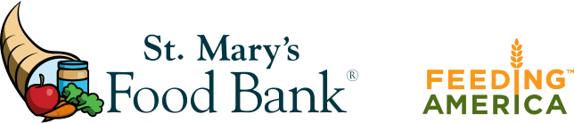
Volunteer with MCA to pack emergency food boxes for Arizona families.
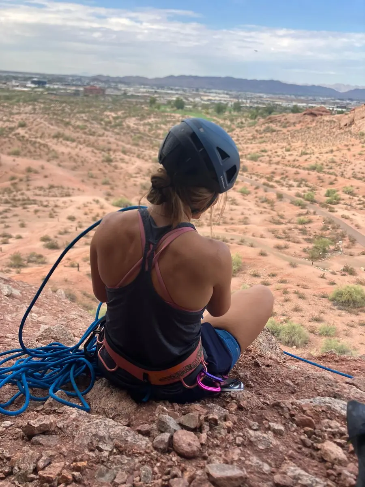
An early-morning cleanup focused on graffiti and care for the park.
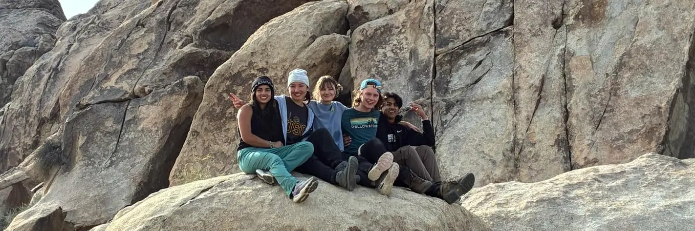
A small-group introduction to Adaptive Ascents at Papago Park.
Bring your idea, your effort, and your willingness to learn.
Adaptive Ascents supports young adults with disabilities who want more ways to explore and grow outdoors. Each experience begins with the person—their interests, comfort, communication, and support needs.
Led by staff with direct-care experience and CPR/First Aid certification.
We are beginning with a small group so we can plan around each participant’s interests, comfort, pace, communication, and support needs.
Submitting interest does not automatically confirm a place. We will follow up with the participant and the people involved in their support before making a plan.
People communicate interest, comfort, and choice in many ways. We welcome information from the participant and from family members, guardians, support people, or others who know them well.
What seems enjoyable, meaningful, calming, challenging, or worth working toward.
How the participant shows interest, comfort, discomfort, choice, or a need for a break—through speech, sounds, movement, expression, behavior, AAC, gestures, or another way.
Walking distance, terrain, mobility devices, rest needs, balance, physical assistance, and heat tolerance.
Noise, crowds, transitions, touch, weather, routines, signs of discomfort, and what helps the participant feel at ease.
Whether a familiar support person should attend, transportation, equipment, supervision, and what MCA can responsibly provide.
This is an interest and planning form, not a medical intake or confirmed registration. Please do not include diagnoses, medical records, medication lists, or other private health documents. If a safety topic needs discussion, simply tell us to follow up.
We look at the participant’s interests, the requested activity, and the support or partnership needed.
We connect with the participant and people who know their support needs. The format can be adapted to communication and comfort.
We confirm pace, communication, staffing, equipment, transportation, emergency expectations, and whether a qualified partner is needed.
If the opportunity is a responsible fit, we send event details and the official ASU- or partner-approved waiver.
[Shared introduction explaining how they shaped the founders.]
[Tribute paragraph.]
[Tribute paragraph.]
[Tribute paragraph.]
I wanted to get into mountaineering, but I didn’t see any clear pathways. It was hard to get into safely and affordably, and then it was hard to find other people willing to go with me. That was the original problem that led me to believe a club at ASU could help myself and others.
But there are also a lot of other changes I want to see in the world. The way I think is: well, let’s combine them (under the club). I work a lot with kids with disabilities, and I strongly believe they deserve access to nature—and to the challenge, hardship, and growth that can be found there—as much as anyone else. We have the ability to help create that access. I began to see the intersection: our mountaineering club could lend its manpower and energy to this initiative and help make those experiences possible.
Then, as “I” became “we,” a lot of new passions got thrown in—and that became our common ground. That passion is what continues to drive us forward.
So, we are becoming a network of driven people trying to make a difference, while helping one another make the differences each of us wants to see.
We believe that wild places possess inherent value and that every living being possesses inherent worth. Because something possesses inherent value, it deserves our care, respect, and stewardship.
We believe that people flourish through purpose, meaningful challenge, strong community, and time spent in nature. These experiences cultivate resilience, deepen relationships, strengthen character, and foster a lasting sense of responsibility.
We also believe that caring for others and caring for ourselves are not opposing goals—they reinforce one another. Likewise, the well-being of people and the well-being of the places they inhabit are deeply connected. When we improve the world around us, we also shape the kind of people we become.
Therefore, we seek experiences that simultaneously strengthen people and strengthen their relationship with the natural world.
We believe mountaineering provides one of the richest environments in which to cultivate these values. Time spent in the backcountry asks us to rely on one another, embrace meaningful challenge, act with responsibility, and experience the beauty and fragility of wild places firsthand. Through shared challenge, shared responsibility, and shared accomplishment, we build stronger communities while developing a deeper appreciation for the landscapes that sustain us.
If contributing to something larger than ourselves gives life meaning, then when we have the ability to improve something, we should. Every expedition is an opportunity to leave a trail cleaner, teach a new skill, support a teammate, protect a wild place, or strengthen the community around us. These actions are not separate from mountaineering—they are part of it.
The Mountaineering Club exists to turn these beliefs into action. We climb not simply to reach summits, but to become healthier, more capable, and more connected people. Through adventure, stewardship, and service, we strive to leave every person, every place, and every community better than we found it.
Space for current leaders, advisors, and team members.
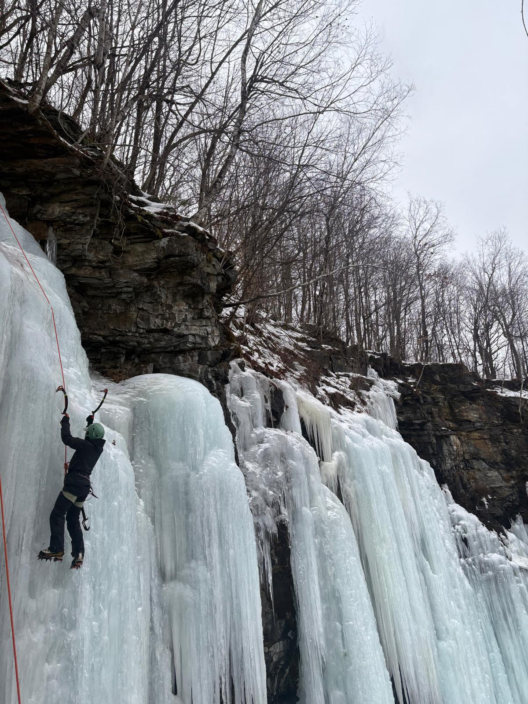
Team Member
[Short bio.]
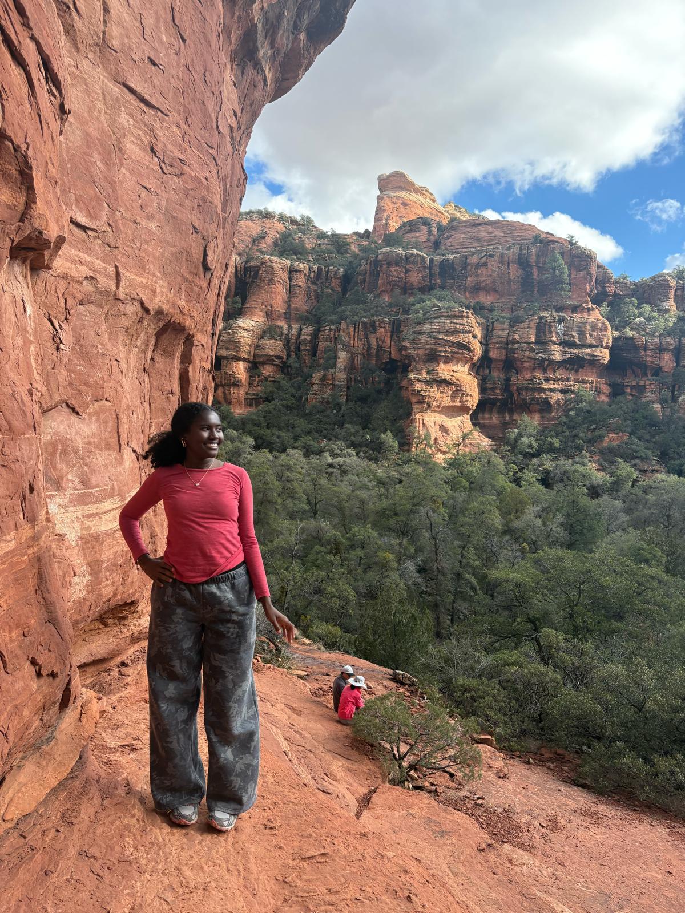
Team Member
[Short bio.]
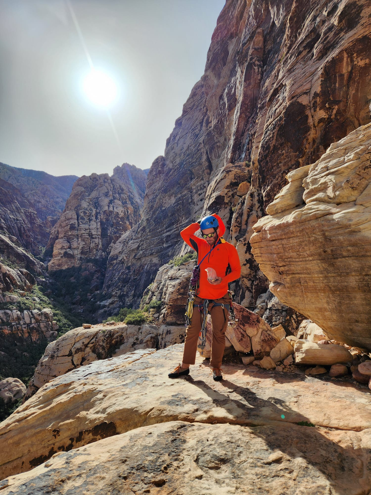
Advisor
[Short bio.]
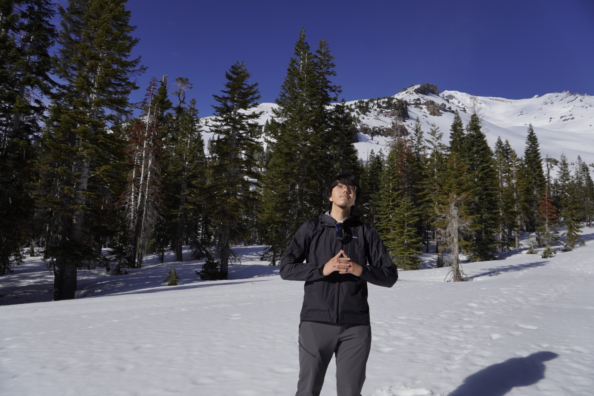
Team Member
[Short bio.]
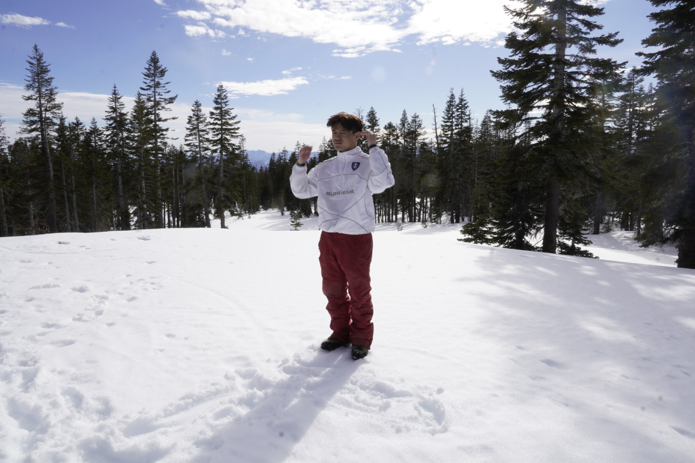
Team Member
[Short bio.]
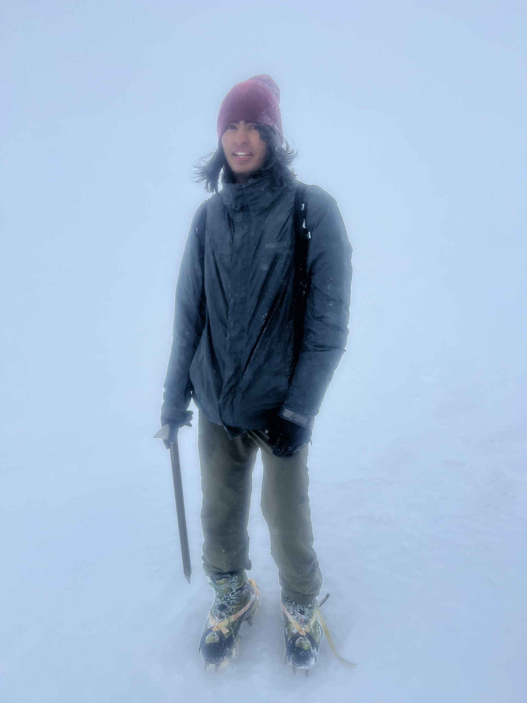
Team Member
[Short bio.]
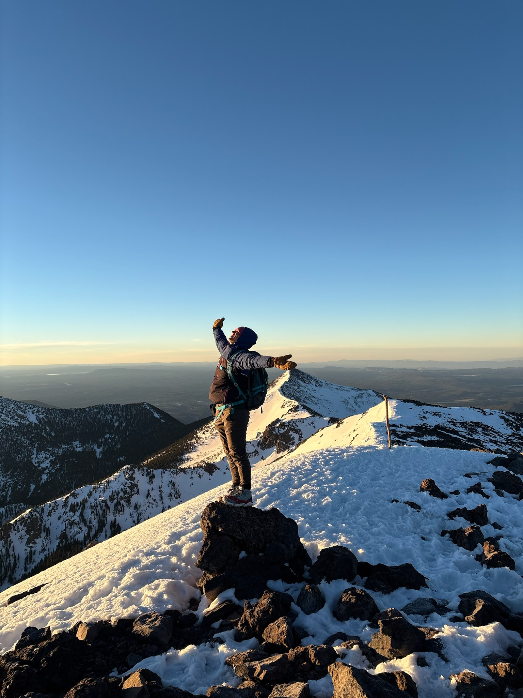
Vice President
[Short bio.]
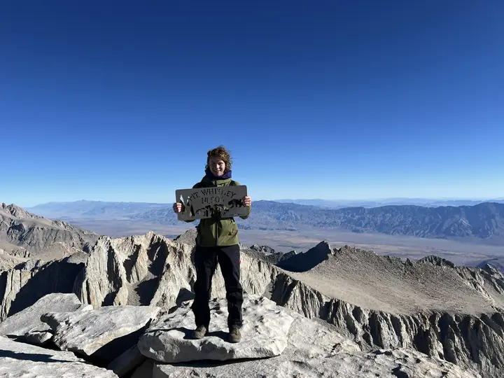
President
[Short bio.]
Team Member
Team Member
Team Member
Team Member
Team Member
Team Member
Team Member
"I dont need to know where i'm going I just need to know where i've been" - Tow Mator
Use the arrows, swipe horizontally, or scroll sideways to move between months.
Bring MCA an adventure, training day, service project, workshop, or gathering. A rough idea is enough to begin.
Whether it is an adventure, service project, workshop, partnership, or something entirely new, you do not need to have everything figured out. Share what you are thinking, then choose a time to meet with us so we can help you take the next step.
A few sentences are all we need before we meet.
You’ll currently be meeting with Tony, President of MCA. We’ll review your idea beforehand so the meeting can focus on possibilities instead of paperwork.
Calendar not loading? Open the scheduling page in a new tab.
We’ll review your idea before we meet so we can spend our time talking about possibilities, useful connections, and what the next step could be.
MCA is still new, and we do not yet have an alumni community. We look forward to the day when former members can remain involved, reconnect, and help current students find their way beyond college.
Future reunions, talks, informal gatherings, and trips that bring former and current members together.
A future network where alumni can share experience, introduce members to professional fields, and help students explore opportunities after graduation.
As the alumni community develops, current members will be able to request a conversation with someone whose experience, career, or interests may be useful to them.
We work best with partners who can help define a real need, shape a responsible role for students, and communicate what success would look like. A partnership can begin with one service day, one participant opportunity, one workshop, or a longer relationship.
The right structure depends on the people served, the work involved, the supervision required, and what MCA can responsibly provide.
Volunteer support, project development, outreach, and recurring service.
Outdoor experiences, skill-building, service, and student mentorship.
Adaptive opportunities shaped around participants and qualified support.
Stewardship, restoration, cleanup, monitoring, and public education.
Animal enrichment, volunteer days, supply projects, and community events.
Equipment access, training, sponsorship, expertise, and co-created programs.
Tell us about your organization, the people or place involved, and the problem or opportunity you see.
We use the Calendly meeting below to clarify goals, capacity, supervision, safety, timing, and fit.
Together, we define responsibilities, communication, preparation, and a realistic first project or event.
Afterward, we document what happened, gather feedback, and decide whether the relationship should grow.
Submitting this form begins a conversation. It does not guarantee that MCA can provide volunteers, funding, equipment, transportation, technical instruction, one-on-one support, or a particular date. We will be direct about what is possible and where a qualified partner is required.
Give us enough context to make the first meeting useful. Rough ideas are welcome.
Explore current leadership positions, responsibilities, expectations, and ways to express interest.
Team Leads make the club feel smaller, more personal, and more dependable. They help members move from simply attending events to preparing for and completing a meaningful shared objective.
The President keeps the different parts of MCA moving in the same direction. The role is less about personally doing everything and more about making sure leaders have what they need to succeed.
The Vice President helps prevent good ideas from getting lost between planning and execution. It is a flexible role that responds to whatever the organization most needs.
The Treasurer helps MCA make ambitious plans without becoming financially irresponsible. This role protects both the club and its members by keeping money organized and transparent.
The Trips Director helps transform exciting ideas into realistic plans. The role does not replace individual trip leaders; it gives them structure, support, and another set of eyes.
The Training Director helps members prepare before they enter more serious environments. The goal is not to pretend every workshop creates an expert, but to give members practical foundations and clear next steps.
The Service Coordinator turns the club’s desire to help into organized, reliable action. This role makes sure partners can trust MCA to show up prepared and follow through.
The Partnerships Director helps MCA gain access to resources and opportunities it could not create alone. The emphasis should be on real relationships, not simply asking companies for free gear.
Media and Outreach helps people understand what MCA actually is. It should show the adventure, service, training, and friendships honestly without making the club look inaccessible or exaggerating its accomplishments.
Leadership doesn’t always start with experience. If you’re interested in helping out but aren’t sure where you’d fit, I’d be happy to talk through the different roles and help you find one that matches your interests.
[A member poem, journal fragment, or reflection.]
Guides, checklists, planning tools, safety information, and club documents collected in one place. Resources will open as MCA Field Guides, printable PDFs, forms, or website pages depending on the material.
No resources match that search yet.
Tell us what information would help you prepare for a trip, learn a skill, or participate more confidently. Useful requests may become future MCA Field Guides.
Request a ResourceMembers and instructors can suggest edits, submit notes, or help improve a guide. Contributions should be clear, sourced where appropriate, and honest about the limits of the author’s experience.
Contribute to the LibraryJoin as a member, take responsibility as a leader, build a partnership, or bring us an idea that does not fit into a preset box.
Attend trips, meetings, service projects, training, and social events while learning how MCA works.
Every member is expected to contribute to at least one MCA project by organizing an idea, joining a project team, or helping another member carry their project out.
Join on Sun Devil CentralOrganize one thing, support another leader, become a Team Lead, or explore a director or officer role.
For organizations, schools, families, parks, disability-serving groups, shelters, companies, and community partners.
Use MCA’s community and resources to shape a trip, workshop, service project, gathering, or something new.
Parents, guardians, participants, support people, and organizations can begin the adaptive intake process on its dedicated page.
Next meeting: Tentatively Wednesday, September 16, 2026 at 6:00 PM. Location to be announced.
New and returning members are welcome. Check the club calendar for the newest meeting and event details.
Gear, experience, time commitment, trip costs, and how MCA compares with the Arizona State Outdoors Club.
Read the FAQsEmail Tony at afishe54@asu.edu, explore the FAQs and Resources, or use the Bring an Idea page to schedule a 30-minute conversation.
Welcome to MCA’s website! First and foremost, MCA is a community. The club is centered around pushing ourselves mentally and physically in the mountains, but we also aim to support our members in all of their pursuits.
You don’t need any special equipment to come on MCA trips. All necessary trip equipment is provided, though at some point you may choose to purchase your own boots or other personal equipment.
No worries. The point of this club is to decrease the barriers to outdoor activities and help more people go on sick adventures.
You should absolutely do both. MCA focuses more on larger objectives that are often out of state, while the Arizona State Outdoors Club offers a wider variety of outings that mostly stay in Arizona. MCA still goes on plenty of smaller trips for fun, skill-building, and team bonding.
The amount of time you spend on trips, training, meetings, and social events is flexible. Every member is expected to contribute to at least one MCA project by organizing something, joining a project team, or helping another member carry their idea out. For more advanced objectives, participants will also need to complete enough preparation for leaders to confirm that everyone is ready.
All of our day trips are free. For trips over school breaks, participants split shared costs such as gas, flights, and food. On the most advanced trips, rentals for specialized boots, crampons, and ice axes should generally cost no more than $50 per person. When an objective does not require that specialized equipment, MCA should have the necessary group equipment available for participants.